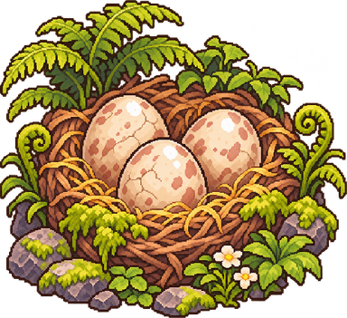
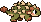
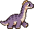
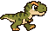

Windows용 무료 데스크톱 펫 게임
평소처럼 키보드와 마우스를 쓰면, 바탕화면 아래 작은 알이 자라요. 첫 공룡을 깨우고, 마음에 드는 다섯 마리와 원정을 떠나 보세요.
Windows 10 · 11 · 설치 파일 약 65 MB
바탕화면에서 공룡과 함께 지내다가, 모험이 하고 싶을 때 연구 캠프를 열어 보세요.




쥐라기와 백악기에 살았던 공룡 883종이 등장해요. 둥지에서 다음에 어떤 공룡을 만날지 기대하고, 연구 캠프에서 DNA도 조합해 보세요.
공룡 도감 둘러보기서로 다른 역할의 공룡을 팀으로 꾸려 지층을 탐험하고, 대륙마다 다른 야생 공룡과 맞서요. 5대 대멸종 레이드에서는 바탕화면의 공룡 모두가 출전해 보스 패턴을 공략하고 희귀 장신구를 노려요.
탐험과 전투 살펴보기Windows 10 또는 11에서 설치하면 바탕화면 아래쪽에 첫 알이 나타나요. 부화한 뒤에는 첫 공룡 돌보기를 따라 해 보세요.
Dinori_Beta_Setup.exe를 내려받아요.
다운로드한 설치 파일을 더블클릭해요.
설치 창에서 ‘다음’, ‘설치’를 눌러요.
전체 화면 게임이나 영상을 볼 때는 공룡이 자동으로 숨어요.
게임은 누른 횟수만 세고 어떤 키를 눌렀는지는 기록하지 않아요. 자세한 내용은 개인정보 처리방침에서 확인할 수 있어요.
게임을 다시 켤 때 새 버전이 있으면 자동으로 업데이트돼요. 켜 둔 동안 새 버전이 나오면 캠프 본부에서 무전이 와요 — 알림 영역(트레이) 아이콘 메뉴의 ‘★ 새 장비 설치’나 연구 캠프 위쪽의 노란 무전 버튼을 누르세요. 키우던 공룡은 그대로 남아요. 무엇이 바뀌었는지는 발굴 보고서에서 볼 수 있어요.
Windows 시작 메뉴에서 ‘다이노리 지우기’를 찾아 실행하세요. 삭제할 때 저장 데이터도 지울지 선택할 수 있어요.